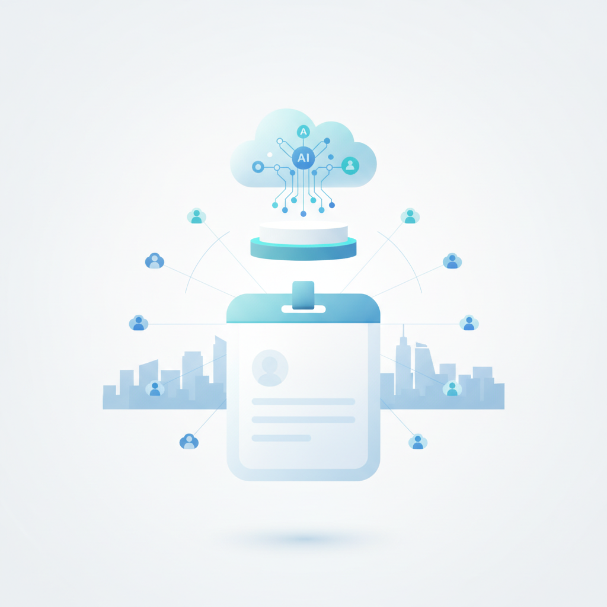
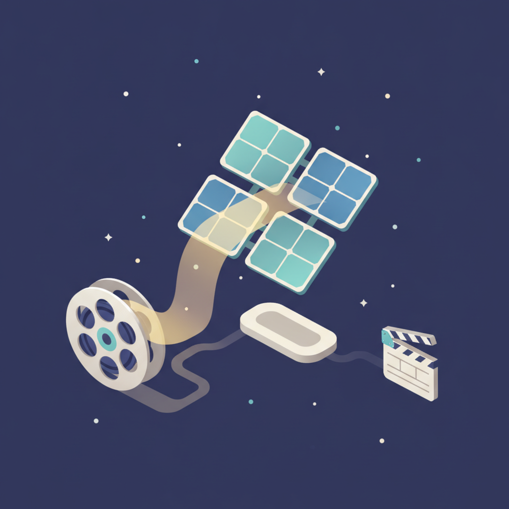
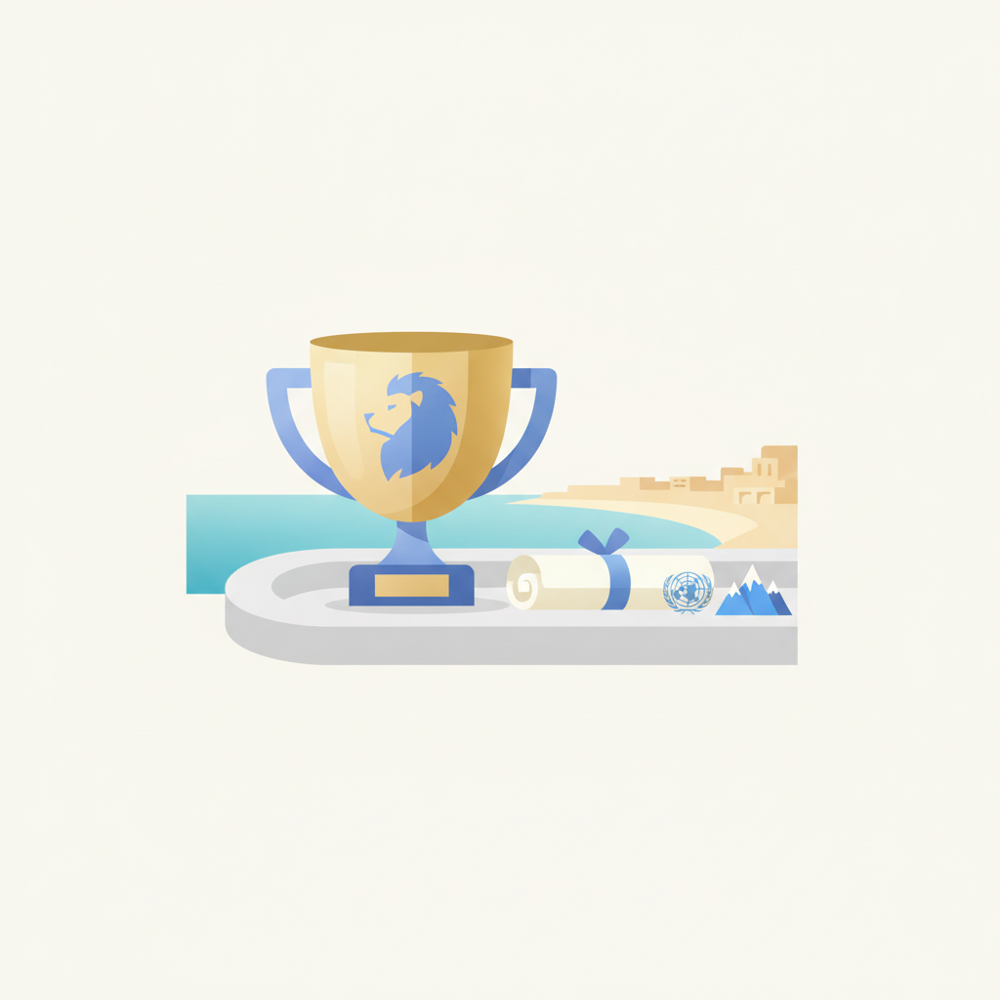
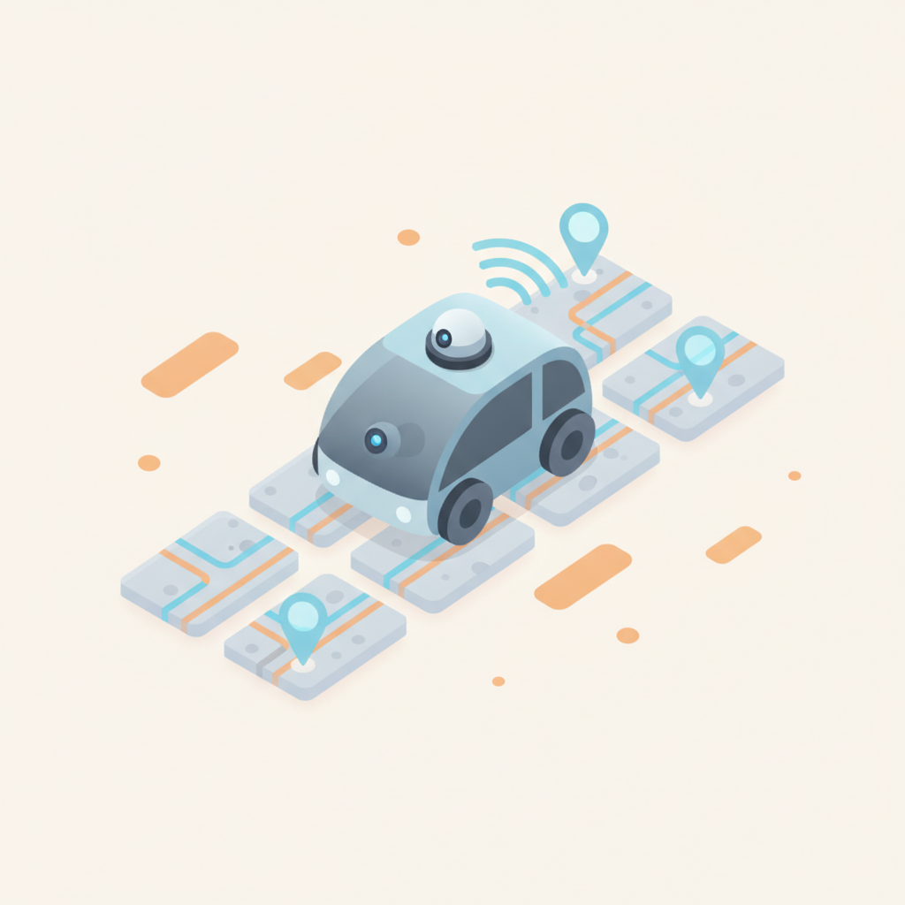
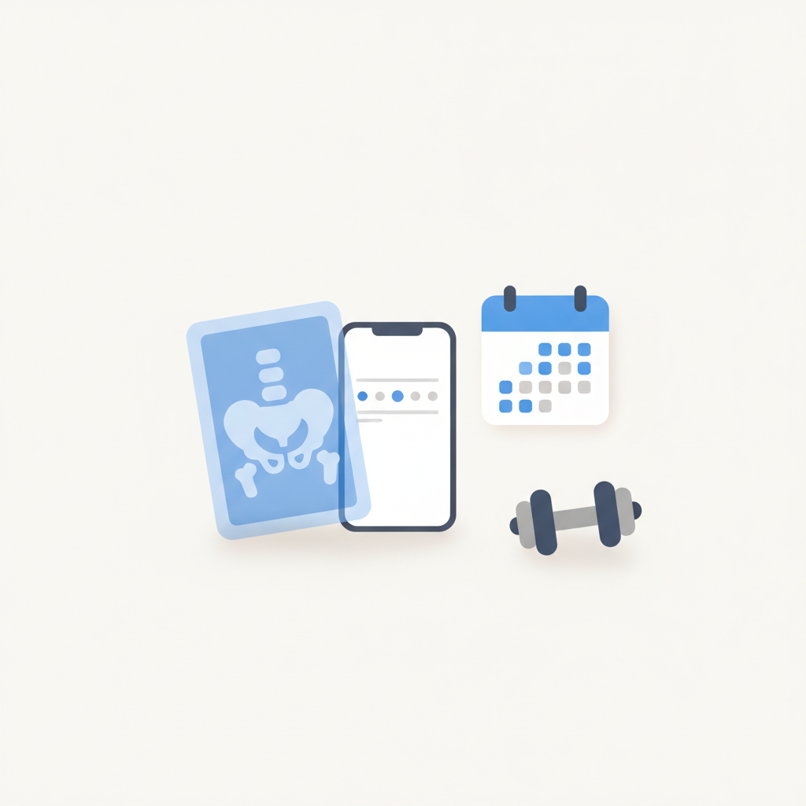
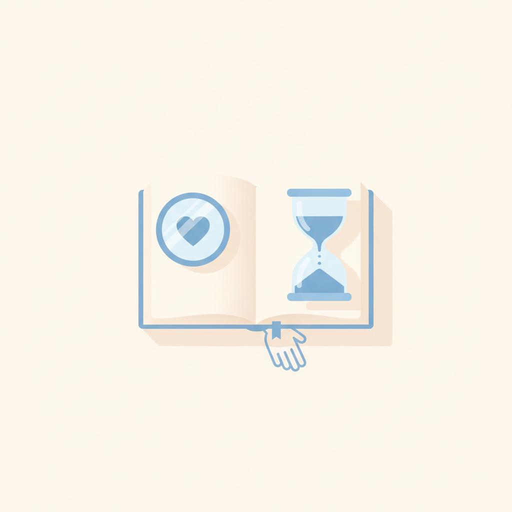
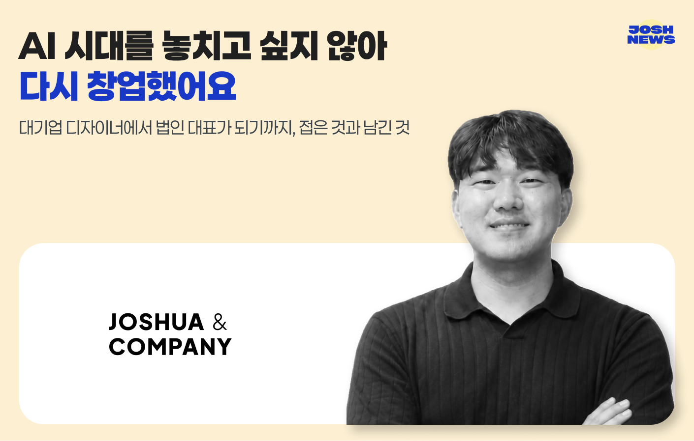
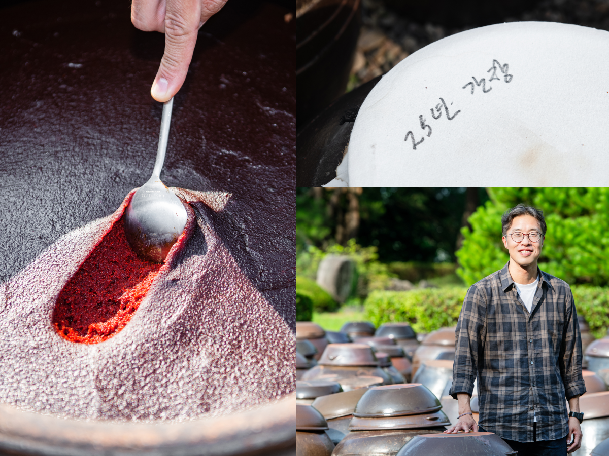

안녕하세요! 금요일 마케팅 소식 전해드립니다 😊 오늘은 롱블랙의 만포농산 이야기가 인상적입니다. 경북 영주의 된장 브랜드 '무량수'가 전략 컨설턴트 출신 후계자를 만나 미쉐린 셰프들이 찾는 장으로 거듭난 과정인데요, 좋은 재료와 전통만으로는 부족하고 브랜드 언어와 유통 전략이 더해져야 시장이 반응한다는 것을 보여주는 사례입니다. '된장에도 솔루션이 필요하다'는 표현 자체가 요즘 로컬·전통 식품 브랜드가 처한 현실을 정확히 짚고 있습니다.
빌더조쉬에서는 대기업 디자이너가 AI 시대를 계기로 창업에 나선 이야기를 다루고 있습니다. 접은 것과 남긴 것을 직접 정리하며 법인 대표가 된 과정인데, AI가 일하는 방식을 바꾸는 것을 넘어 커리어 자체를 재설계하는 이유가 되고 있다는 점이 흥미롭습니다. 마케팅 업계 소식에서는 티오더의 태블릿 광고 플랫폼이 엔터·영화 분야에서 광고 매출 3배 성장을 기록했다는 소식도 주목됩니다. 식당 테이블이라는 접점이 콘텐츠 마케팅 채널로 빠르게 자리 잡아가는 흐름입니다.
금요일 아침도 힘차게 시작하시고, 이번 주 마무리도 잘 하시길 바랍니다! 🙌
티오더, 엔터·콘텐츠 분야 광고 3배 성장… 영화 '호프'·걸그룹 리센느도 택했다
티오더의 태블릿 기반 광고 플랫폼 사업이 콘텐츠 업계를 중심으로 빠르게 성장하고 있다.31일 티오더에 따르면 자사 태블릿 광고 중 엔터·영화·게임 등 콘텐츠 분야 광고가 2026년 상반기에만 지난해 전체의 약 3배로 늘었다. 영화, 게임, 드라마부터 도서 출판, 예능 프로그램, 아이돌 팬덤 캠페인 등으로 폭넓게 다각화되며 콘텐츠 산업 전반으로 영역을 넓히고 있다. 이러한 성장세에는 누적 35만 대 태블릿 인프라를 기반으로 한 밀도 높은 고객 접점과 참여형 광고 구조가 주효했다는 평가다. 티오더 태블릿 광고는 단순히 노출되고 끝나는
›
2애피어, ‘맥스서밋 2026’서 AI 에이전트가 이끄는 차세대 고객 경험 여정 제시
[ 매드타임스 채성숙 기자] AI 네이티브 AaaS(Agentic AI as a Service) 기업 애피어(Appier)가 오는 8월 3일부터 4일까지 서울 코엑스에서 열리는 마케팅·애드테크 컨퍼런스 ‘맥스서밋 2026(MAX SUMMIT 2026)’에 참가해 AI 에이전트가 이끄는 고객 경험의 진화에 대한 인사이트를 공유한다고 밝혔다.맥스서밋은 마케팅과 광고, 애드테크 산업의 주요 기업과 전문가들이 참여해 시장 변화와 실무 인사이트를 공유하는 마케팅 컨퍼런스다. 올해는 ‘The AI Era: What Wins – WHY, HOW
›
3이노션 '제 2의 밤낚시', '우주태양광' 소재로 브랜드 철학 전한다
광고와 엔터테인먼트를 결합해 새로운 영역을 개척한 것으로 평가 받는 이노션이 제 2의 '밤낚시(Night Fishing)' 제작에 나선다.31일 브랜드브리프 취재 결과, 이노션은 아시아콘텐츠&필름마켓(ACFM) 이노아시아와 함께 기획한 '시네마바이브랜드(cinema by brand)' 공모를 오는 8월 17일까지 접수 받는다. '시네마바이브랜드'의 첫번째 협업 브랜드는 '우주 태양광'을 소재로 한다. 이노션은 "'시네마바이브랜드'는 브랜드가 주제(Theme)가
›
4"오프라 윈프리·파타고니아·UN우주사무국 통해 미래를 봤죠"… 칸라이언즈로 간 광고 꿈나무의 참관기
"이번 칸라이언즈는 한마디로 '꿈'과 같은 순간이었습니다."국내 최대 규모의 대학생 크리에이티비티 공모전 '2026 드림라이언즈'에서 그랑프리를 수상한 권진석 고려대학교 학생이 세계 최대·최고의 크리에이티비티 페스티벌 '칸라이언즈(The Cannes Lions International Festival of Creativity)'에서 보낸 꿈같은 일주일의 후기를 전해왔다.권진석 학생은 최대 4명까지 팀을 꾸릴 수 있는 드림라이언즈에 홀로 도전해 최고상을 거머쥐었다. 그랑프리 수상 특전으로 칸
›
5서울에너지공사, 자율주행차로 열수송관 점검 실증
서울에너지공사가 자율주행 차량을 활용한 열수송관 안전점검 기술을 현장에서 검증한다. 서울경제진흥원(SBA)과 함께 추진하는 ‘ESG 개방형 테스트베드 사업’의 하나로, 오는 8월부터 12월까지 약 5개월간 실증을 진행한다. 이 기술을 맡은 곳은 자율주행 소프트웨어 기업 에스더블유엠이다. 차량이 열수송관이 묻힌 도로를 따라 달리며 주변 영상과 위치정보를 자동으로 수집하고, 이 정보를 열수송관 위치와 연결해 점검에 쓸 수 있는지 확인한다. 2005년 설립된 회사로 AI 기반 자율주행 소프트웨어와 차량 데이터 수집·분석 기술을 개발해 왔
›
6[Startup’s Story #537] 픽스업헬스가 동작 인식 기술을 걷어낸 이유
임상원 대표와 홍태하 CTO가 말하는 미국 재활의료의 ‘진료 사이 공백’ 미국에서 고관절이 부러진 환자의 재활은 짧게 끝나지 않는다. 3~4개월 동안 일주일에 한두 번, 30분씩 차를 몰고 동네 재활의원에 다녀야 한다. 문제는 그 사이다. “외래 진료 사이사이에 환자 관리가 안 되는 거죠. 그 공백을 메꿔주자고 해서 시작한 서비스입니다.” 임상원 픽스업헬스 대표의 말이다. 픽스업헬스는 미국 재활의료기관을 대상으로 ... 더 읽기
›
7Empathy as Greatest Strength
We live in the age of AI. Even as we worry that AI may someday replace human beings, we continue to rely on it more and more. Perhaps one day technology will even overcome aging itself. Yet for now, we all grow old. Because our lives are finite, we treasure every moment and the people we love. Perha
›
대기업 디자이너에서 법인 대표가 되기까지, 접은 것과 남긴 것
- 2023년 뉴스레터 시작 후 이오플래닛 트래픽을 기반으로 강의·커뮤니티·컨퍼런스 등 15개 이상 비즈니스 모델 직접 실험.
- 레니의 뉴스레터(50만 구독자)에서 착안해 매주 15시간 투자, 유료급 콘텐츠 무료 제공으로 신뢰와 구매 전환을 동시에 설계.
- 1인 솔로프리너에서 조슈아앤컴퍼니 5인 법인으로 확장, 현재 대기업 AX 솔루션·기업 교육 프로젝트 중심으로 전환.


미쉐린 셰프들이 찾아 쓰는 장이 있습니다. 경북 영주의 만포농산이 만드는 ‘무량수’의 장입니다.
아티클 읽기 →브랜드 진단부터 지금 당장 해야 할 우선순위까지,
30분 무료 상담에서 함께 정리해드려요.
이미 수십 개 브랜드가 상담받았습니다.
내 브랜드처럼, 함께 고민하는 팀원의 마음으로 봅니다.
스타트업 대표·마케팅 담당자를 위한 30분